Lecciones de circuitos eléctricos - Volumen VI
Capítulo 2
CONCEPTOS BÁSICOS Y EQUIPOS DE PRUEBA
- Voltmeter usage
- Ohmmeter usage
- A very simple circuit
- Ammeter usage
- Ohm's Law
- Nonlinear resistance
- Power dissipation
- Circuit with a switch
- Electromagnetism
- Electromagnetic induction
Voltmeter usage
PIEZAS Y MATERIALES
- Multímetro, digital o analógico.
- Pilas surtidas
- Un diodo emisor de luz (catálogo de Radio Shack # 276-026 o equivalente)
- Motor pequeño "hobby", tipo imán permanente (catálogo de Radio Shack # 273-223 o equivalente)
- Dos cables de puente con extremos en forma de "clip de cocodrilo" (catálogo de Radio Shack n.° 278-1156, 278-1157 o equivalente)
A multímetroEs un instrumento eléctrico capaz de medir voltaje, corriente y resistencia.DigitalLos multímetros tienen pantallas numéricas, como relojes digitales, para indicar la cantidad de voltaje, corriente o resistencia.Cosa análogaLos multímetros indican estas cantidades mediante un puntero móvil sobre una escala impresa.
Los multímetros analógicos tienden a ser menos costosos que los multímetros digitales y más beneficiosos como herramientas de aprendizaje para quienes estudian electricidad por primera vez. Recomiendo encarecidamente comprar un multímetro analógico antes de comprar un multímetro digital, pero eventualmente tener ambos en su kit de herramientas para estos experimentos.
REFERENCIAS CRUZADAS
Lecciones en circuitos eléctricos, Volumen 1, capítulo 1: “Conceptos Básicos de Electricidad”
Lecciones en circuitos eléctricos, Volumen 1, capítulo 8: "Circuitos de medición de CC"
OBJETIVOS DE APRENDIZAJE
- Cómo medir el voltaje
- Características del voltaje: existente.entre dos puntos
- Selección del rango de medidor adecuado
ILUSTRACIÓN
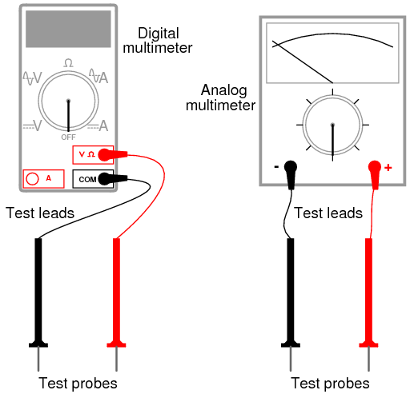
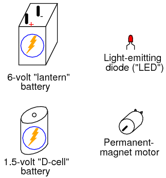
INSTRUCCIONES
En todos los experimentos de este libro, utilizará algún tipo de equipo de prueba para medir aspectos de la electricidad que no puede ver, sentir, oír, saborear ni oler directamente. La electricidad, al menos en cantidades pequeñas y seguras, es insensible para nuestros cuerpos humanos. Tus "ojos" más fundamentales en el mundo de la electricidad y la electrónica serán un dispositivo llamadomultímetro. Los multímetros indican la presencia y miden la cantidad de propiedades eléctricas comoVoltaje, actual, yresistencia. En este experimento, se familiarizará con la medición de voltaje.
El voltaje es la medida del "empuje" eléctrico dispuesto para motivar a los electrones a moverse a través de un conductor. En términos científicos, es la energía específica por unidad de carga, definida matemáticamente como julios por culombio. Es análogo apresiónen un sistema de fluidos: la fuerza que mueve un fluido a través de una tubería, y se mide en la unidad del Voltio (V).
Su multímetro debe venir con algunas instrucciones básicas. ¡Leedlos bien! Si su multímetro es digital, necesitará una batería pequeña para funcionar. Si es analógico no necesita batería para medir voltaje.
Algunos multímetros digitales sonrango automático. Un medidor de rango automático tiene sólo unas pocas posiciones de interruptor selector (dial). Los medidores de rango manual tienen varias posiciones de selección diferentes para cada cantidad básica: varias para voltaje, varias para corriente y varias para resistencia. El rango automático generalmente se encuentra solo en los medidores digitales más caros y es para el rango manual como lo es una transmisión automática para una transmisión manual en un automóvil. Un medidor de rango automático "cambia de marcha" automáticamente para encontrar el mejor rango de medición para mostrar la cantidad particular que se está midiendo.
Coloca el interruptor selector de tu multímetro en la posición de "voltaje CC" de mayor valor disponible. Es posible que los multímetros de rango automático solo tengan una única posición para el voltaje de CC, en cuyo caso deberá configurar el interruptor en esa posición. Toque la sonda de prueba roja con el lado positivo (+) de una batería y la sonda de prueba negra con el lado negativo (-) de la misma batería. El medidor ahora debería proporcionarle algún tipo de indicación. Invierta las conexiones de la sonda de prueba a la batería si la indicación del medidor es negativa (en un medidor analógico, un valor negativo se indica cuando el puntero se desvía hacia la izquierda en lugar de hacia la derecha).
Si su medidor es del tipo de rango manual y el interruptor selector se ha colocado en una posición de rango alto, la indicación será pequeña. Mueva el interruptor selector al siguiente ajuste de rango de voltaje de CC más bajo y vuelva a conectarlo a la batería. La indicación debería ser más fuerte ahora, como lo indica una mayor desviación del puntero del medidor analógico (aguja), o más dígitos activos en la pantalla del medidor digital. Para obtener mejores resultados, mueva el interruptor selector a la configuración de rango más bajo que no "exceda el rango" del medidor. Se dice que un medidor analógico de rango excesivo está "fijado", ya que la aguja será forzada hasta el lado derecho de la escala, más allá del valor de escala de rango completo. Un medidor digital de rango excesivo a veces muestra las letras "OL" o una serie de líneas discontinuas. Esta indicación es específica del fabricante.
¿Qué sucede si solo toca un extremo de la batería con una sonda de prueba de un medidor? ¿Cómo debe conectarse el medidor a la batería para proporcionar una indicación? ¿Qué nos dice esto sobre el uso del voltímetro y la naturaleza del voltaje? ¿Existe algo llamado voltaje "en" un solo punto?
Asegúrese de medir más de un tamaño de batería y aprenda cómo seleccionar el mejor rango de voltaje en el multímetro para brindarle la máxima indicación sin exceder el rango.
Ahora cambie su multímetro al rango de voltaje de CC más bajo disponible y toque las puntas de prueba del medidor con los terminales (cables) del diodo emisor de luz (LED). Un LED está diseñado para producir luz cuando se alimenta con una pequeña cantidad de electricidad, pero los LED tambiéngenerarVoltaje CC cuando se expone a la luz, algo así como una célula solar. Apunte el LED hacia una fuente de luz brillante con su multímetro conectado y observe la indicación del medidor:
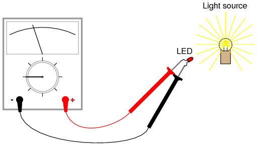
Las baterías desarrollan voltaje eléctrico a través de reacciones químicas. Cuando una batería "se agota", ha agotado su reserva original de "combustible" químico. El LED, sin embargo, no depende de un "combustible" interno para generar voltaje; más bien,convierteenergía óptica en energía eléctrica. Mientras haya luz para iluminar el LED, producirá voltaje.
Otra fuente de voltaje a través de la conversión de energía agenerador. El pequeño motor eléctrico especificado en la lista "Piezas y materiales" funciona como un generador eléctrico si su eje se hace girar mediante una fuerza mecánica. Conecte su voltímetro (su multímetro, configurado en la función "voltio") a los terminales del motor tal como lo conectó a los terminales del LED y gire el eje con los dedos. El medidor debe indicar el voltaje mediante desviación de la aguja (analógica) o lectura numérica (digital).
Si le resulta difícil mantener ambas sondas de prueba del medidor en conexión con los terminales del motor mientras gira simultáneamente el eje con los dedos, puede usarpinza de cocodrilocables de "puente" como este:
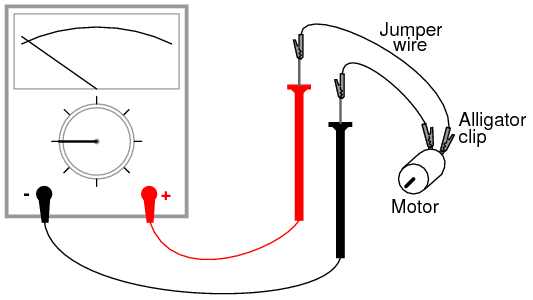
¿Determinar la relación entre el voltaje y la velocidad del eje del generador? Invierta la dirección de rotación del generador y observe el cambio en la indicación del medidor. Cuando invierte la rotación del eje, cambia lapolaridaddel voltaje creado por el generador. El voltímetro indica la polaridad mediantedirecciónde la dirección de la aguja (analógica) ofirmarde indicación numérica (digital). Cuando el cable de prueba rojo es positivo (+) y el cable de prueba negro es negativo (-), el medidor registrará voltaje en la dirección normal. Si el voltaje aplicado es de polaridad inversa (negativo en rojo y positivo en negro), el medidor indicará "al revés".
Ohmmeter usage
PIEZAS Y MATERIALES
- Multímetro, digital o analógico.
- Resistencias variadas (el catálogo de Radio Shack # 271-312 es un surtido de 500 piezas)
- Diodo rectificador (1N4001 o equivalente; catálogo de Radio Shack # 276-1101)
- Fotocélula de sulfuro de cadmio (catálogo de Radio Shack # 276-1657)
- Placa de pruebas (catálogo de Radio Shack # 276-174 o equivalente)
- Cables de puente
- Papel
- Lápiz
- vaso de agua
- Sal de mesa
Este experimento describe cómo medir la resistencia eléctrica de varios objetos. No necesitas poseerallelementos enumerados anteriormente para aprender eficazmente sobre la resistencia. Por el contrario, no es necesario que limite sus experimentos a estos elementos. Sin embargo, asegúrese denuncaMida la resistencia de cualquier objeto o circuito eléctricamente "vivo". En otras palabras, no intente medir la resistencia de una batería o cualquier otra fuente de voltaje sustancial usando un multímetro configurado en la función de resistencia ("ohmios"). No prestar atención a esta advertencia probablemente provocará daños al medidor e incluso lesiones personales.
REFERENCIAS CRUZADAS
Lecciones en circuitos eléctricos, Volumen 1, capítulo 1: “Conceptos Básicos de Electricidad”
Lecciones en circuitos eléctricos, Volumen 1, capítulo 8: "Circuitos de medición de CC"
OBJETIVOS DE APRENDIZAJE
- Determinación y comprensión de la "continuidad eléctrica".
- Determinación y comprensión de "puntos eléctricamente comunes"
- Cómo medir la resistencia
- Características de la resistencia: existenteentre dos puntos
- Selección del rango de medidor adecuado
- Conductividad relativa de varios componentes y materiales.
ILUSTRACIÓN
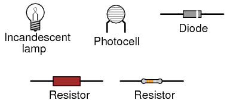
INSTRUCCIONES
La resistencia es la medida de la "fricción" eléctrica cuando los electrones se mueven a través de un conductor. Se mide en la unidad del "Ohm", esa unidad simbolizada por la letra griega mayúscula omega (Ω).
Configure su multímetro en el rango de resistencia más alto disponible. La función de resistencia generalmente se indica con el símbolo de unidad de resistencia: la letra griega omega (Ω) o, a veces, con la palabra "ohmios". Toque las dos puntas de prueba de su medidor juntas. Cuando lo haga, el medidor debería registrar 0 ohmios de resistencia. Si está utilizando un medidor analógico, notará que la aguja se desvía por completo cuando las sondas se tocan y regresa a su posición de reposo cuando se separan las sondas. La escala de resistencia en un multímetro analógico está impresa al revés de las otras escalas: la resistencia cero se indica en el extremo derecho de la escala y la resistencia infinita se indica en el extremo izquierdo. También debe haber una pequeña perilla de ajuste o "rueda" en el multímetro analógico para calibrarlo a "cero" ohmios de resistencia. Toque las sondas de prueba y mueva este ajuste hasta que la aguja apunte exactamente a cero en el extremo derecho de la escala.
Aunque su multímetro es capaz de proporcionar valores cuantitativos de resistencia medida, también es útil paracualitativopruebas decontinuidad: si existe o no conexión eléctrica continua de un punto a otro. Puede, por ejemplo, probar la continuidad de un trozo de cable conectando las sondas del medidor a los extremos opuestos del cable y verificando que la aguja se mueva a escala completa. ¿Qué diríamos de un trozo de cable si la aguja del óhmetro no se moviera en absoluto cuando las sondas estuvieran conectadas a los extremos opuestos?
Los multímetros digitales configurados en el modo "resistencia" indican la falta de continuidad mostrando alguna indicación no numérica en la pantalla. Algunos modelos dicen "OL" (Open-Loop), mientras que otros muestran líneas discontinuas.
Utilice su medidor para determinar la continuidad entre los agujeros en untablero de circuitos: un dispositivo utilizado para la construcción temporal de circuitos, donde los terminales de los componentes se insertan en orificios en una rejilla de plástico, clips de resorte de metal debajo de cada orificio que conectan ciertos orificios con otros. Utilice pequeños trozos de alambre de cobre sólido de calibre 22, insertados en los orificios de la placa de prueba, para conectar el medidor a estos clips de resorte para poder probar la continuidad:
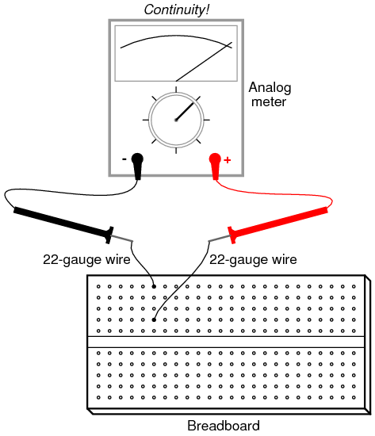
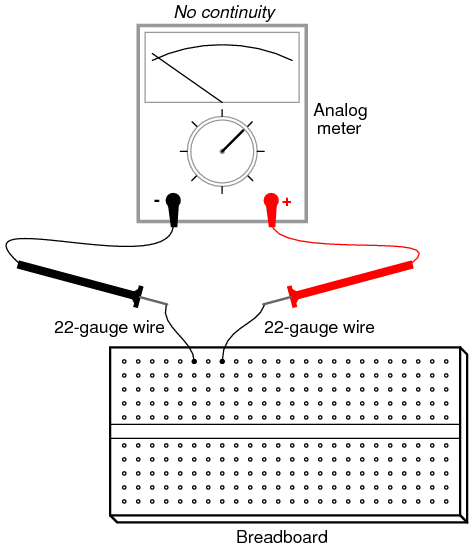
Un concepto importante en electricidad, estrechamente relacionado con la continuidad eléctrica, es el de puntos que estáneléctricamente comúnel uno al otro. Los puntos eléctricamente comunes son puntos de contacto en un dispositivo o en un circuito que tienen una resistencia insignificante (extremadamente pequeña) entre ellos. Podríamos decir, entonces, que los puntos dentro de una columna del protoboard (verticales en las ilustraciones) soneléctricamente comúnentre sí, porque hay electricidadcontinuidadentre ellos. Por el contrario, los puntos del tablero dentro de una fila (horizontales en las ilustraciones) no son eléctricamente comunes porque no hay continuidad entre ellos.Continuidaddescribe lo que hay entre los puntos de contacto, mientraspuntos en comúnDescribe cómo los puntos se relacionan entre sí.
Al igual que la continuidad, la similitud es una evaluación cualitativa, basada en una comparación relativa de la resistencia entre otros puntos de un circuito. Es un concepto importante de comprender, porque hay ciertos hechos relacionados con el voltaje en relación con puntos eléctricamente comunes que son valiosos en el análisis de circuitos y la resolución de problemas, el primero es que nunca habrá una caída sustancial de voltaje entre puntos que son eléctricamente comunes entre sí.
Seleccione una resistencia de 10.000 ohmios (10 kΩ) de su surtido de piezas. Este valor de resistencia se indica mediante una serie de bandas de colores: Marrón, Negro, Naranja y luego otro color que representa la precisión de la resistencia, Oro (+/- 5%) o Plata (+/- 10%). Algunas resistencias no tienen color para mayor precisión, lo que las marca como +/- 20%. Otras resistencias utilizan cinco bandas de colores para indicar su valor y precisión, en cuyo caso los colores de una resistencia de 10 kΩ serán marrón, negro, negro, rojo y un quinto color para mayor precisión.
Conecte las puntas de prueba del medidor a través de la resistencia como tal y observe su indicación en la escala de resistencia:
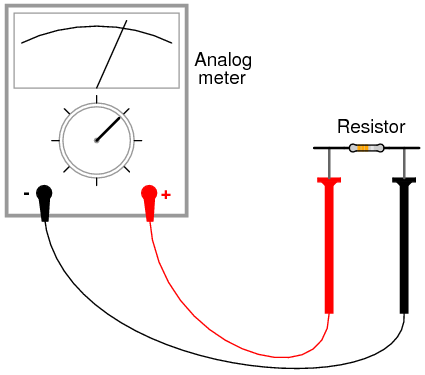
Si la aguja apunta muy cerca de cero, debe seleccionar un rango de resistencia más bajo en el medidor, tal como necesitaba seleccionar un rango de voltaje apropiado al leer el voltaje de una batería.
Si está utilizando un multímetro digital, debería ver una cifra numérica cercana a 10 en la pantalla, con un pequeño símbolo "k" en el lado derecho que indica el prefijo métrico de "kilo" (mil). Algunos medidores digitales tienen un rango manual y requieren una selección de rango adecuada al igual que el medidor analógico. Si el suyo es así, experimente con diferentes posiciones del interruptor de rango y vea cuál le brinda la mejor indicación.
Intente invertir las conexiones de las sondas de prueba en la resistencia. ¿Esto cambia en algo la indicación del medidor? ¿Qué nos dice esto sobre la resistencia de una resistencia? ¿Qué sucede cuando solo tocas una sonda en la resistencia? ¿Qué nos dice esto sobre la naturaleza de la resistencia y cómo se mide? ¿Cómo se compara esto con la medición de voltaje y qué sucedió cuando intentamos medir el voltaje de la batería tocando solo una sonda en la batería?
Cuando toque las sondas del medidor con los terminales de resistencia, trate de no tocar ambas puntas de las sondas con los dedos. Si lo hace, estará midiendo la combinación paralela de la resistencia y su propio cuerpo, lo que tenderá a hacer que la indicación del medidor sea más baja de lo que debería ser. Al medir una resistencia de 10 kΩ, este error será mínimo, pero puede ser más grave al medir otros valores de resistencia.
Puede medir de forma segura la resistencia de su propio cuerpo sosteniendo la punta de una sonda con los dedos de una mano y la otra punta de la sonda con los dedos de la otra mano.Nota:Tenga mucho cuidado con las sondas, ya que a menudo están afiladas hasta la punta de una aguja. ¡Sujete las puntas de las sondas a lo largo de toda su longitud, no en los puntos exactos! Es posible que necesites ajustar el rango del medidor nuevamente después de medir la resistencia de 10 kΩ, ya que la resistencia de tu cuerpo tiende a ser mayor a 10,000 ohmios mano a mano. Intente mojarse los dedos con agua y vuelva a medir la resistencia con el medidor. ¿Qué impacto tiene esto en la indicación? Intente mojarse los dedos consalagua preparada con el vaso de agua y sal de mesa, y volver a medir la resistencia. ¿Qué impacto tiene esto en la resistencia de su cuerpo medida por el medidor?
La resistencia es la medida de la fricción al flujo de electrones a través de un objeto. Cuanta menos resistencia haya entre dos puntos, más difícil será para los electrones moverse (fluir) entre esos dos puntos. Dado que la descarga eléctrica es causada por un gran flujo de electrones a través del cuerpo de una persona, y el aumento de la resistencia corporal actúa como protección al hacer más difícil que los electrones fluyan a través de nosotros, ¿qué podemos determinar sobre la seguridad eléctrica a partir de las lecturas de resistencia obtenidas con los dedos mojados? ¿El agua aumenta o disminuye el riesgo de descarga eléctrica para las personas?
Mida la resistencia de un diodo rectificador con un medidor analógico. Intente invertir las conexiones de la sonda de prueba al diodo y vuelva a medir la resistencia. ¿Qué te parece destacable del diodo, especialmente en comparación con la resistencia?
Tome una hoja de papel y dibuje una marca negra muy gruesa con un lápiz (¡no con un bolígrafo!). Mida la resistencia en la franja negra con su medidor, colocando las puntas de las sondas en cada extremo de la marca de esta manera:
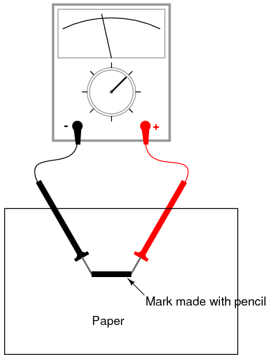
Acerque las puntas de las sondas sobre la marca negra y observe el cambio en el valor de resistencia. ¿Aumenta o disminuye al disminuir el espacio entre sondas? Si los resultados son inconsistentes, deberá volver a dibujar la marca con más trazos de lápiz y más intensos, para que su densidad sea consistente. ¿Qué le enseña esto sobre la resistencia versus la longitud de un material conductor?
Conecte su medidor a los terminales de una fotocélula de sulfuro de cadmio (CdS) y mida el cambio en la resistencia creado por las diferencias en la exposición a la luz. Al igual que con el diodo emisor de luz (LED) del experimento del voltímetro, es posible que desees utilizar cables de puente con pinzas de cocodrilo para realizar la conexión con el componente, dejando tus manos libres para sujetar la fotocélula a una fuente de luz y/o cambiar los rangos del medidor:
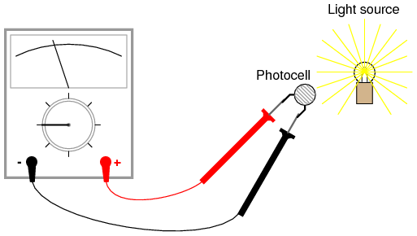
Experimente midiendo la resistencia de varios tipos diferentes de materiales, pero asegúrese de no intentar medir nada que produzca un voltaje sustancial, como una batería. Las sugerencias de materiales para medir son: tela, plástico, madera, metal, agua limpia, agua sucia, agua salada, vidrio, diamante (en un anillo de diamantes u otra pieza de joyería), papel, caucho y aceite.
A very simple circuit
PIEZAS Y MATERIALES
- 6-volt battery
- 6-volt incandescent lamp
- Cables de puente
- Tablero de circuitos
- Regleta de terminales
A partir de este experimento, se supone que es necesario un multímetro y no se incluirá en la lista requerida de piezas y materiales. En todas las ilustraciones siguientes, se mostrará un multímetro digital en lugar de un medidor analógico, a menos que exista alguna razón particular para utilizar un medidor analógico. Se le anima a utilizarambostipos de medidores para familiarizarse con el funcionamiento de cada uno en estos experimentos.
REFERENCIAS CRUZADAS
Lecciones en circuitos eléctricos, Volumen 1, capítulo 1: “Conceptos Básicos de Electricidad”
OBJETIVOS DE APRENDIZAJE
- Configuración esencial necesaria para hacer un circuito.
- Caídas de tensión normales en un circuito operativo.
- Importancia de la continuidad de un circuito.
- Definiciones prácticas de circuitos "abiertos" y "corto"
- Uso de la placa de pruebas
- Uso de regleta de terminales
DIAGRAMA ESQUEMÁTICO
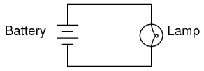
ILUSTRACIÓN
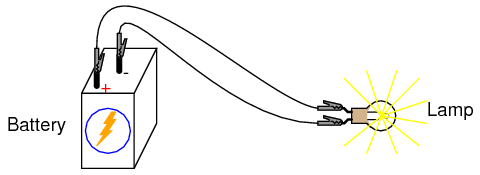
INSTRUCCIONES
Este es el circuito completo más simple de esta colección de experimentos: una batería y una lámpara incandescente. Conecte la lámpara a la batería como se muestra en la ilustración y la lámpara debería encenderse, asumiendo que la batería y la lámpara están en buenas condiciones y coinciden entre sí en términos de voltaje.
Si hay una "ruptura" (discontinuidad) en cualquier parte del circuito, la lámpara no se encenderá. lo hacenot¡No importa dónde se produzca tal ruptura! Muchos estudiantes suponen que debido a que los electrones salen del lado negativo (-) de la batería y continúan a través del circuito hacia el lado positivo (+), el cable que conecta el terminal negativo de la batería a la lámpara es más importante para el funcionamiento del circuito que el otro cable que proporciona una ruta de retorno para los electrones a la batería. ¡Esto no es verdad!
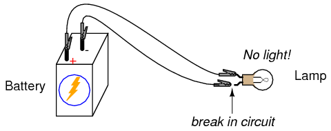
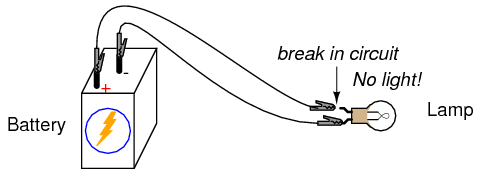
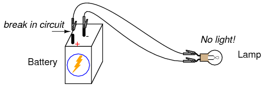
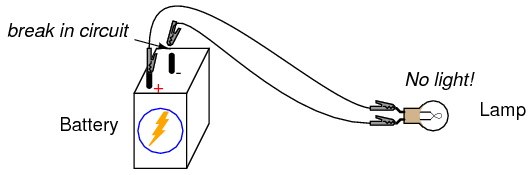
Usando su multímetro configurado en el rango apropiado de "voltios CC", mida el voltaje en la batería, en la lámpara y en cada cable de puente. Familiarícese con los voltajes normales en un circuito en funcionamiento.
Ahora, "rompe" el circuito en un punto y vuelve a medir el voltaje entre los mismos conjuntos de puntos, midiendo además el voltaje a través de la interrupción de esta manera:
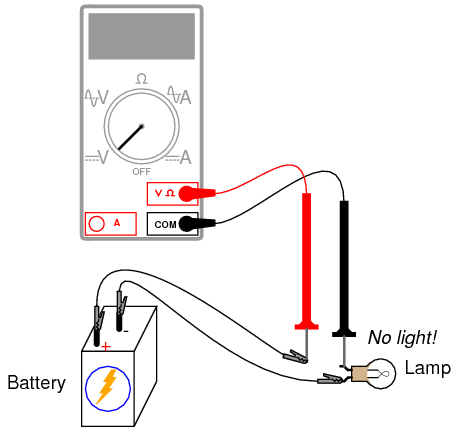
¿Qué voltajes miden igual que antes? ¿Qué voltajes son diferentes desde que se introdujo la interrupción? ¿Cuánto voltaje se manifiesta, oabandonóal otro lado del descanso? cual es elpolaridadde la caída de voltaje a través del corte, como lo indica el medidor?
Vuelva a conectar el cable de puente a la lámpara y corte el circuito en otro lugar. Mida nuevamente todas las "caídas" de voltaje, familiarizándose con los voltajes de un circuito "abierto".
Construya el mismo circuito en una placa, teniendo cuidado de colocar la lámpara y los cables en la placa de tal manera que se mantenga la continuidad. El ejemplo que se muestra aquí es sólo eso: un ejemplo, no elsoloManera de construir un circuito en una placa de pruebas:
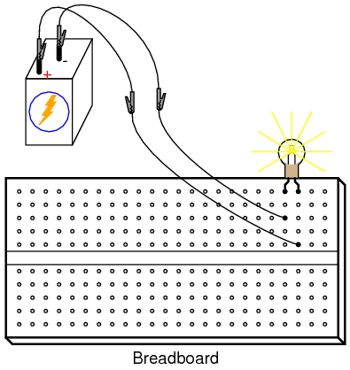
Experimente con diferentes configuraciones en la placa, conectando la lámpara en diferentes orificios. Si se encuentra con una situación en la que la lámpara se niega a encenderse y los cables de conexión se calientan, probablemente tenga una situación conocida comocortocircuito, donde una ruta de menor resistencia que la lámpara desvía la corriente alrededor de la lámpara, evitando que caiga suficiente voltaje a través de la lámpara para encenderla. A continuación se muestra un ejemplo de un cortocircuito realizado en una placa de pruebas:
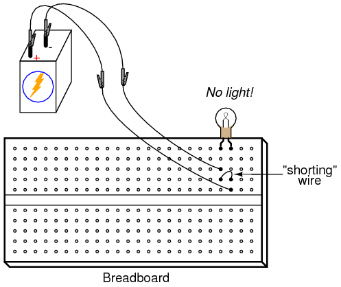
He aquí un ejemplo de unaaccidentalCortocircuito del tipo que suelen realizar los estudiantes que no están familiarizados con el uso de la placa de pruebas:
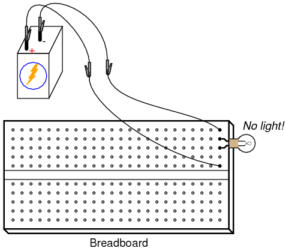
Aquí no hay ningún cable de "cortocircuito" presente en la placa de pruebas, pero aún así hayisun cortocircuito y la lámpara se niega a encenderse. Según su comprensión de las conexiones de los orificios de la placa de pruebas, ¿puede determinar dónde está el "cortocircuito" en este circuito?
Por lo general, se deben evitar los cortocircuitos, ya que dan como resultado tasas muy altas de flujo de electrones, lo que hace que los cables se calienten y se agoten las fuentes de energía de las baterías. Si la fuente de energía es lo suficientemente importante, un cortocircuito puede causar que se manifieste calor de proporciones explosivas, causando daños al equipo y peligro al personal cercano. Esto es lo que sucede cuando la rama de un árbol hace "cortocircuito" entre los cables de una línea eléctrica: la rama, al estar compuesta de madera húmeda, actúa como un camino de baja resistencia para la corriente eléctrica, lo que genera calor y chispas.
También puede construir el circuito de batería/lámpara en una regleta de terminales: un trozo de material aislante con barras de metal y tornillos para sujetar cables y terminales de componentes. A continuación se muestra un ejemplo de cómo se podría construir este circuito en una regleta de terminales:
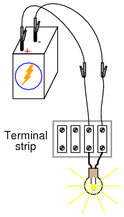
Ammeter usage
PIEZAS Y MATERIALES
- 6-volt battery
- 6-volt incandescent lamp
Se supone que los componentes básicos de construcción del circuito, como placa de prueba, regleta de terminales y cables de puente, también estarán disponibles a partir de ahora, dejando solo los componentes y materiales exclusivos del proyecto enumerados en "Piezas y materiales".
REFERENCIAS CRUZADAS
Lecciones en circuitos eléctricos, Volumen 1, capítulo 1: “Conceptos Básicos de Electricidad”
Lecciones en circuitos eléctricos, Volumen 1, capítulo 8: "Circuitos de medición de CC"
OBJETIVOS DE APRENDIZAJE
- Cómo medir la corriente con un multímetro
- Cómo comprobar el fusible interno de un multímetro
- Selección del rango de medidor adecuado
DIAGRAMA ESQUEMÁTICO
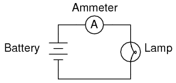
ILUSTRACIÓN
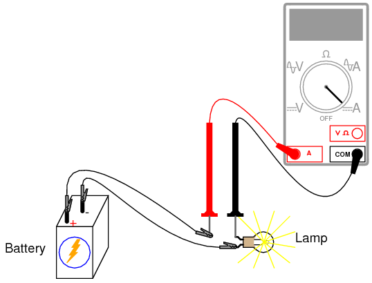
INSTRUCCIONES
La corriente es la medida de la tasa de "flujo" de electrones en un circuito. Se mide en la unidad de amperio, llamado simplemente "amperio" (A).
La forma más común de medir la corriente en un circuito es abrir el circuito e insertar un "amperímetro" enserie(en línea) con el circuito de modo que todos los electrones que fluyen a través del circuito también tengan que pasar por el medidor. Debido a que medir la corriente de esta manera requiere que el medidor forme parte del circuito, es un tipo de medición más difícil de realizar que el voltaje o la resistencia.
Algunos medidores digitales, como la unidad que se muestra en la ilustración, tienen un conector separado para insertar el enchufe del cable de prueba rojo al medir la corriente. Otros medidores, como la mayoría de los medidores analógicos económicos, usan los mismos conectores para medir voltaje, resistencia y corriente. Consulte el manual del propietario del modelo particular de medidor que posee para obtener detalles sobre la medición de corriente.
Cuando un amperímetro se coloca en serie con un circuito, lo ideal es que no caiga voltaje a medida que la corriente lo atraviesa. En otras palabras, actúa de manera muy parecida a un trozo de cable, con muy poca resistencia de una sonda de prueba a la otra. En consecuencia, un amperímetro actuará como un cortocircuito si se coloca en paralelo (entre los terminales de) una fuente sustancial de voltaje. Si se hace esto, se producirá un aumento de corriente que podría dañar el medidor:
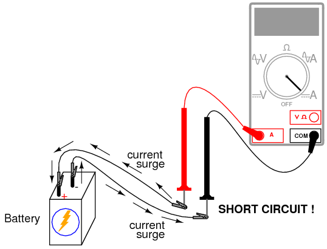
Los amperímetros generalmente están protegidos contra corriente excesiva por medio de un pequeñofusibleubicado dentro de la carcasa del medidor. Si el amperímetro se conecta accidentalmente a través de una fuente de voltaje sustancial, el aumento de corriente resultante "quemará" el fusible y dejará al medidor incapaz de medir la corriente hasta que se reemplace el fusible.¡Ten mucho cuidado para evitar este escenario!
Puedes probar el estado del fusible de un multímetro cambiándolo al modo de resistencia y midiendo la continuidad a través de los cables de prueba (y a través del fusible). En un medidor donde se utilizan los mismos conectores de cables de prueba para medición de resistencia y corriente, simplemente deje los enchufes de los cables de prueba donde están y toque las dos sondas. En un medidor donde se utilizan diferentes clavijas, así es como se insertan los enchufes de los cables de prueba para verificar el fusible:
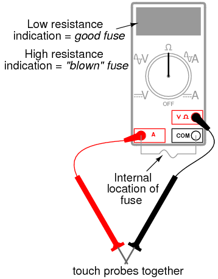
Construya el circuito de una batería y una lámpara usando cables de puente para conectar la batería a la lámpara y verifique que la lámpara se encienda antes de conectar el medidor en serie con ella. Luego, abra el circuito en cualquier punto y conecte las puntas de prueba del medidor a los dos puntos de la interrupción para medir la corriente. Como de costumbre, si su medidor tiene un rango manual, comience seleccionando el rango más alto para la corriente, luego mueva el interruptor selector a posiciones de rango más bajas hasta que se obtenga la indicación más fuerte en la pantalla del medidor sin excederlo. Si la indicación del medidor está "al revés" (movimiento hacia la izquierda en una aguja analógica o lectura negativa en una pantalla digital), invierta las conexiones de las sondas de prueba e inténtelo nuevamente. Cuando el amperímetro indica una lectura normal (no "al revés"), los electrones entran por el cable de prueba negro y salen por el rojo. Así es como se determina la dirección de la corriente con un medidor.
Para una batería de 6 voltios y una lámpara pequeña, la corriente del circuito estará en el rango demilésimasde un amplificador, omiliamperios. Los medidores digitales suelen mostrar una letra minúscula "m" en el lado derecho de la pantalla para indicar este prefijo métrico.
Intente romper el circuito en algún otro punto e insertar el medidor allí. ¿Qué notas sobre la cantidad de corriente medida? ¿Por qué crees que es esto?
Reconstruya el circuito en una placa de prueba como esta:
Los estudiantes a menudo se confunden al conectar un amperímetro a un circuito de placa de pruebas. ¿Cómo se puede conectar el medidor para interceptar toda la corriente del circuito y no crear un cortocircuito? Un método sencillo que garantiza el éxito es este:
- Identifique a través de qué cable o terminal de componente desea medir la corriente.
- Saque ese cable o terminal del orificio de la placa de pruebas. Déjalo colgado en el aire.
- Inserta un trozo de cable de repuesto en el orificio del que acabas de sacar el otro cable o terminal. Deja el otro extremo de este cable colgando en el aire.
- Conecte el amperímetro entre los dos extremos de los cables desconectados (los dos que estaban colgados en el aire). tu eres ahorasegurode medir corriente a través del cable o terminal inicialmente identificado.
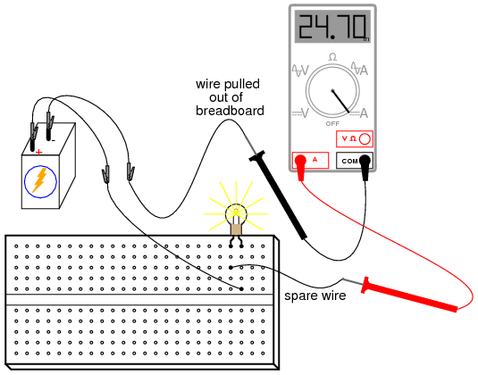
Nuevamente, mida la corriente a través de diferentes cables en este circuito, siguiendo el mismo procedimiento de conexión descrito anteriormente. ¿Qué notas sobre estas mediciones actuales? Los resultados en el circuito de la placa de pruebas deben ser los mismos que los resultados en el circuito de forma libre (sin placa de pruebas).
Construir el mismo circuito en una regleta de terminales también debería producir resultados similares:
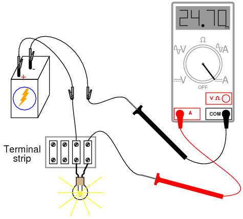
La cifra actual de 24,70 miliamperios (24,70 mA) que se muestra en las ilustraciones es una cantidad arbitraria, razonable para una lámpara incandescente pequeña. Si la corriente de su circuito tiene un valor diferente, está bien, siempre y cuando la lámpara esté funcionando cuando el medidor esté conectado. Si la lámpara se niega a encenderse cuando el medidor está conectado al circuito y el medidor registra una lectura mucho mayor, probablemente tenga una condición de cortocircuito en el medidor. Si su lámpara se niega a encenderse cuando el medidor está conectado al circuito y el medidor registra corriente cero, probablemente haya fundido el fusible dentro del medidor. Verifique el estado del fusible de su medidor como se describió anteriormente en esta sección y reemplace el fusible si es necesario.
Ohm's Law
PIEZAS Y MATERIALES
- Calculadora (o lápiz y papel para hacer aritmética)
- 6-volt battery
- Surtido de resistencias entre 1 KΩ y 100 kΩ de valor
Estoy restringiendo deliberadamente los valores de resistencia entre 1 kΩ y 100 kΩ para obtener lecturas precisas de voltaje y corriente con su medidor. Con valores de resistencia muy bajos, la resistencia interna del amperímetro tiene un impacto significativo en la precisión de la medición. Los valores de resistencia muy altos pueden causar problemas en la medición de voltaje, ya que la resistencia interna del voltímetro cambia sustancialmente la resistencia del circuito cuando se conecta en paralelo con una resistencia de alto valor.
Con los valores de resistencia recomendados, todavía habrá una pequeña cantidad de error de medición debido al "impacto" del medidor, pero no lo suficiente como para causar un desacuerdo serio con los valores calculados.
REFERENCIAS CRUZADAS
Lecciones en circuitos eléctricos, Volumen 1, capítulo 2: "Ley de Ohm"
OBJETIVOS DE APRENDIZAJE
- Uso del voltímetro
- uso del amperímetro
- uso del ohmímetro
- Uso de la ley de Ohm
DIAGRAMA ESQUEMÁTICO
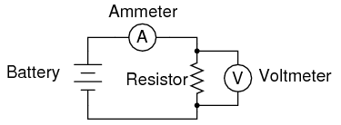
ILUSTRACIÓN
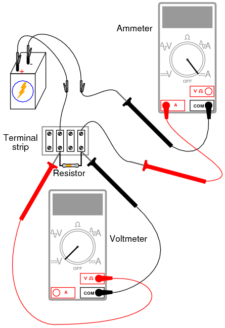
INSTRUCCIONES
Seleccione una resistencia del surtido y mida su resistencia con su multímetro configurado en el rango de resistencia apropiado. ¡Asegúrese de no sujetar los terminales de resistencia al medir la resistencia, de lo contrario la resistencia de su cuerpo mano a mano influirá en la medición! Registre este valor de resistencia para uso futuro.
Construya un circuito de una batería y una resistencia. En la ilustración se muestra una regleta de terminales, pero cualquier forma de construcción de circuito está bien. Configure su multímetro en el rango de voltaje apropiado y mida el voltaje a través de la resistencia mientras está siendo alimentada por la batería. Registre este valor de voltaje junto con el valor de resistencia medido previamente.
Configure su multímetro en el rango de corriente más alto disponible. Rompe el circuito y conecta el amperímetro dentro de ese corte, de modo que forme parte del circuito, en serie con la batería y la resistencia. Seleccione el mejor rango de corriente: el que proporcione la indicación más fuerte del medidor sin exceder el rango del medidor. Si su multímetro tiene rango automático, por supuesto, no necesita molestarse en configurar rangos. Registre este valor de corriente junto con los valores de resistencia y voltaje previamente registrados.
Tomando las cifras medidas de voltaje y resistencia, use la ecuación de la ley de Ohm para calcular la corriente del circuito. Compare esta cifra calculada con la cifra medida para la corriente del circuito:
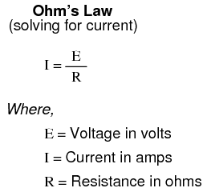
Tomando las cifras medidas de voltaje y corriente, use la ecuación de la ley de Ohm para calcular la resistencia del circuito. Compare esta cifra calculada con la cifra medida para la resistencia del circuito:
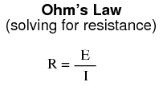
Finalmente, tomando las cifras medidas de resistencia y corriente, use la ecuación de la ley de Ohm para calcular el voltaje del circuito. Compare esta cifra calculada con la cifra medida para el voltaje del circuito:
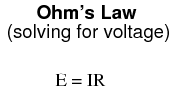
Debe haber una estrecha concordancia entre todas las cifras medidas y calculadas. Cualquier diferencia en las cantidades respectivas de voltaje, corriente o resistencia probablemente se deba a imprecisiones del medidor. Estas diferencias deberían ser bastante pequeñas, no más de varios por ciento. ¡Algunos medidores, por supuesto, son más precisos que otros!
Sustituya diferentes resistencias en el circuito y vuelva a tomar todas las mediciones de resistencia, voltaje y corriente. Vuelva a calcular estas cifras y compruebe que concuerden con los datos experimentales (cantidades medidas). Observe también la relación matemática simple entre los cambios en el valor de la resistencia y los cambios en la corriente del circuito. El voltaje debe permanecer aproximadamente igual para cualquier tamaño de resistencia insertado en el circuito, porque es la naturaleza de una batería mantener el voltaje a un nivel constante.
Nonlinear resistance
PIEZAS Y MATERIALES
- Calculadora (o lápiz y papel para hacer aritmética)
- 6-volt battery
- Lámpara incandescente de bajo voltaje (catálogo de Radio Shack # 272-1130 o equivalente)
REFERENCIAS CRUZADAS
Lecciones en circuitos eléctricos, Volumen 1, capítulo 2: "Ley de Ohm"
OBJETIVOS DE APRENDIZAJE
- Uso del voltímetro
- uso del amperímetro
- uso del ohmímetro
- Uso de la ley de Ohm
- ¡Comprensión de que algunas resistencias son inestables!
- método científico
DIAGRAMA ESQUEMÁTICO
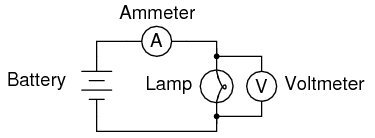
ILUSTRACIÓN
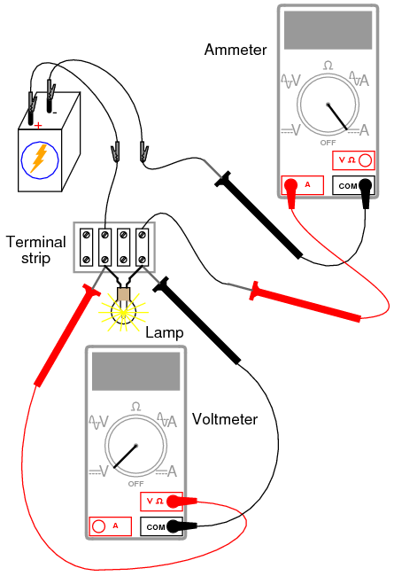
INSTRUCCIONES
Mide la resistencia de la lámpara con tu multímetro. Esta cifra de resistencia se debe al fino "filamento" metálico dentro de la lámpara. Tiene sustancialmente más resistencia que un cable de puente, pero menos que cualquiera de las resistencias del último experimento. Registre este valor de resistencia para uso futuro.
Construya un circuito de una batería y una lámpara. Configure su multímetro en el rango de voltaje apropiado y mida el voltaje en la lámpara a medida que se energiza (encender). Registre este valor de voltaje junto con el valor de resistencia medido previamente.
Configure su multímetro en el rango de corriente más alto disponible. Rompe el circuito y conecta el amperímetro dentro de ese corte, de modo que forme parte del circuito, en serie con la batería y la lámpara. Seleccione el mejor rango de corriente: el que proporcione la indicación más fuerte del medidor sin exceder el rango del medidor. Si su multímetro tiene rango automático, por supuesto, no necesita molestarse en configurar rangos. Registre este valor de corriente junto con los valores de resistencia y voltaje previamente registrados.
Tomando las cifras medidas de voltaje y resistencia, use la ecuación de la ley de Ohm para calcular la corriente del circuito. Compare esta cifra calculada con la cifra medida para la corriente del circuito:
Lo que debería encontrar es una marcada diferencia entre la corriente medida y la corriente calculada: la cifra calculada esmuchomayor que. ¿Por qué es esto?
Para hacerlo más interesante, intente medir la resistencia de la lámpara nuevamente, esta vez usando un modelo diferente de medidor. Deberá desconectar la lámpara del circuito de la batería para obtener una lectura de resistencia, porque los voltajes fuera del medidor interfieren con la medición de resistencia. Esta es una regla general que debe recordarse: mida la resistencia sólo en unsin energía¡componente!
Usando un óhmetro diferente, la lámpara probablemente registrará un valor de resistencia diferente. Por lo general, los medidores analógicos dan lecturas de resistencia de la lámpara más altas que los medidores digitales.
Este comportamiento es muy diferente al de las resistencias del último experimento. ¿Por qué? ¿Qué factor(es) podría(n) influir en la resistencia del filamento de la lámpara y en qué se diferenciarían esos factores entre condiciones de iluminación y no iluminación, o entre mediciones de resistencia tomadas con diferentes tipos de medidores?
Este problema es un buen caso de prueba para la aplicación del método científico. Una vez que haya pensado en una posible razón por la que la resistencia de la lámpara cambia entre condiciones iluminadas y apagadas, intente duplicar esa causa por algún otro medio. Por ejemplo, si cree que la resistencia de la lámpara podría cambiar al exponerse a la luz (su propia luz, cuando está encendida), y que esto explica la diferencia entre las corrientes del circuito medidas y calculadas, intente exponer la lámpara a una fuente externa de luz mientras mide su resistencia. Si mide un cambio sustancial en la resistencia como resultado de la exposición a la luz, entonces su hipótesis tiene algún respaldo probatorio. De lo contrario, entonces su hipótesis ha sido refutada y otra causa debe ser responsable del cambio en la corriente del circuito.
Power dissipation
PIEZAS Y MATERIALES
- Calculadora (o lápiz y papel para hacer aritmética)
- 6 volt battery
- Dos resistencias de 1/4 vatio: 10 Ω y 330 Ω.
- Termómetro pequeño
Los valores de resistencia no necesitan ser exactos, pero sí dentro del cinco por ciento de las cifras especificadas (+/- 0,5 Ω para la resistencia de 10 Ω; +/- 16,5 Ω para la resistencia de 330 Ω). Los códigos de color para resistencias de 10 Ω y 330 Ω con tolerancia del 5 % son los siguientes: marrón, negro, negro, dorado (10, +/- 5 %) y naranja, naranja, marrón, dorado (330, +/- 5 %).
No utilice ningún tamaño de batería que no sea de 6 voltios para este experimento.
El termómetro debe ser lo más pequeño posible para facilitar la detección rápida del calor producido por la resistencia. Recomiendo un termómetro médico, de esos que se utilizan para tomar la temperatura corporal.
REFERENCIAS CRUZADAS
Lecciones en circuitos eléctricos, Volumen 1, capítulo 2: "Ley de Ohm"
OBJETIVOS DE APRENDIZAJE
- Uso del voltímetro
- uso del amperímetro
- uso del ohmímetro
- Uso de la ley de Joule
- Importancia de las potencias nominales de los componentes
- Importancia de los puntos eléctricamente comunes.
DIAGRAMA ESQUEMÁTICO
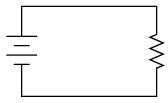
ILUSTRACIÓN
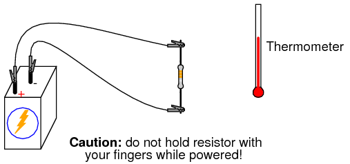
INSTRUCCIONES
Mide la resistencia de cada resistencia con tu óhmetro y anota los valores exactos en una hoja de papel para consultarlos más adelante.
Conecte la resistencia de 330 Ω a la batería de 6 voltios usando un par de cables de puente como se muestra en la ilustración. Conecte los cables de puente a los terminales de resistencia.antesconectando los otros extremos a la batería. Esto asegurará que sus dedos no toquen la resistencia cuando se aplique energía de la batería.
Quizás se pregunte por qué no recomiendo ningún contacto corporal con la resistencia activada. Esto se debe a que se calentará cuando se alimente con la batería. Utilizará el termómetro para medir la temperatura de cada resistencia cuando esté encendida.
Con la resistencia de 330 Ω conectada a la batería, mida el voltaje con un voltímetro. Al medir el voltaje, hay más de una forma de obtener una lectura adecuada. El voltaje se puede medir directamente a través de la batería o directamente a través de la resistencia. El voltaje de la batería es el mismo que el voltaje de la resistencia en este circuito, ya que esos dos componentes comparten el mismo conjunto de puntos eléctricamente comunes: un lado de la resistencia está conectado directamente a un lado de la batería y el otro lado de la resistencia está conectado directamente al otro lado de la batería.
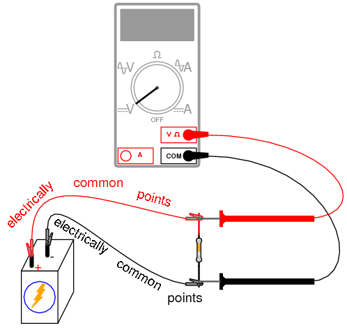
Todos los puntos de contacto a lo largo del cable superior en la ilustración (de color rojo) son eléctricamente comunes entre sí. Todos los puntos de contacto a lo largo del cable inferior (de color negro) son igualmente eléctricamente comunes entre sí. El voltaje medido entre cualquier punto del cable superior y cualquier punto del cable inferior debe ser el mismo. Tensión medidaentre dos puntos comunes, sin embargo, debería ser cero.
Usando un amperímetro, mida la corriente a través del circuito. Nuevamente, no existe una forma "correcta" de medir la corriente, siempre y cuando el amperímetro esté colocadodentro de la ruta de flujode electrones a través de la resistencia y no a través de una fuente de voltaje. Para hacer esto, haga una pausa en el circuito y coloque el amperímetro.dentroesa rotura: conecte las dos puntas de prueba a los dos extremos de los cables o terminales que quedaron abiertos por la rotura. Una opción viable se muestra en la siguiente ilustración:
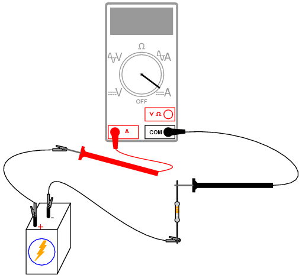
Ahora que ha medido y registrado la resistencia de la resistencia, el voltaje del circuito y la corriente del circuito, está listo para calcularfuerzadisipación. Mientras que el voltaje es la medida del "empuje" eléctrico que motiva a los electrones a moverse a través de un circuito, y la corriente es la medida del caudal de electrones, la potencia es la medida deritmo de trabajo: qué tan rápido se realiza el trabajo en el circuito. Se necesita cierta cantidad de trabajo para empujar electrones a través de una resistencia, y la potencia es una descripción de cómorápidamenteese trabajo se está llevando a cabo. En las ecuaciones matemáticas, la potencia se simboliza con la letra "P" y se mide en la unidad Watt (W).
La potencia se puede calcular mediante cualquiera de tres ecuaciones, denominadas colectivamente Ley de Joule, dadas dos de tres cantidades de voltaje, corriente y resistencia:
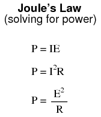
Intente calcular la potencia en este circuito, utilizando los tres valores medidos de voltaje, corriente y resistencia. Cualquiera que sea la forma en que lo calcules, la cifra de disipación de energía debería ser aproximadamente la misma. Suponiendo una batería de 6.000 voltios y una resistencia de exactamente 330 Ω, la disipación de potencia será de 0,1090909 vatios, o 109,0909 milivatios (mW), para usar un prefijo métrico. Dado que la resistencia tiene una potencia nominal de 1/4 vatio (0,25 vatios o 250 mW), es más que capaz de mantener este nivel de disipación de potencia. Debido a que el nivel de potencia real es casi la mitad de la potencia nominal, la resistencia debería calentarse notablemente, pero noencimacalor. Toque el extremo del termómetro con el centro de la resistencia y observe qué tan caliente se calienta.
La potencia nominal de cualquier componente eléctrico no nos dice cuánta potencia necesita.voluntaddisipar, sino simplemente cuánta energíamaydisiparse sin sufrir daños. Si la cantidad real de potencia disipada excede la potencia nominal de un componente, ese componente aumentará la temperatura hasta el punto de dañarse.
Para ilustrar, desconecte la resistencia de 330 Ω y reemplácela con la resistencia de 10 Ω. Nuevamente, evite tocar la resistencia una vez que se complete el circuito, ya que se calentará rápidamente. La forma más segura de hacer esto es desconectar un cable de puente de un terminal de la batería, luego desconectar la resistencia de 330 Ω de las dos pinzas de cocodrilo, luego conectar la resistencia de 10 Ω entre las dos pinzas y finalmente volver a conectar el cable de puente al terminal de la batería.
Precaución: ¡mantenga la resistencia de 10 Ω alejada de materiales inflamables cuando esté alimentada por batería!
Es posible que no tenga tiempo suficiente para tomar medidas de voltaje y corriente antes de que la resistencia comience a humear. A la primera señal de problema, desconecte uno de los cables de puente de un terminal de la batería para interrumpir la corriente del circuito y déle a la resistencia unos momentos para que se enfríe. Con la energía aún desconectada, mida la resistencia de la resistencia con un óhmetro y observe cualquier desviación sustancial de su valor original. Si la resistencia aún mide dentro de +/- 5% de su valor anunciado (entre 9,5 y 10,5 Ω), vuelva a conectar el cable de puente y deje que humee un poco más.
¿Qué tendencia notas en el valor de la resistencia a medida que se daña cada vez más al ser abrumadora? Es típico que las resistencias fallen con una resistencia mayor de lo normal cuando se sobrecalientan. Este es a menudo un modo de falla de autoprotección, ya que una mayor resistencia da como resultado menos corriente y (generalmente) menos disipación de energía, enfriándolo nuevamente. Sin embargo, el valor de resistencia normal de la resistencia no volverá si está suficientemente dañado.
Al realizar nuevamente algunos cálculos de la ley de Joule para la potencia de la resistencia, encontramos que una resistencia de 10 Ω conectada a una batería de 6 voltios disipa aproximadamente 3,6 vatios de potencia, aproximadamente 14,4 vatios.vecessu disipación de potencia nominal. ¡No es de extrañar que humee tan rápido después de conectarlo a la batería!
Circuit with a switch
PIEZAS Y MATERIALES
- 6-volt battery
- Lámpara incandescente de bajo voltaje (catálogo de Radio Shack # 272-1130 o equivalente)
- Longitudes largas de alambre, calibre 22 o más grandes
- Interruptor de luz doméstico (se consiguen fácilmente en cualquier ferretería)
Los interruptores de luz domésticos son una ganga para los estudiantes de electricidad básica. Están fácilmente disponibles, son muy económicos y casi imposibles de dañar con la energía de la batería. No compre interruptores de "atenuación", solo los simples "de palanca" de encendido y apagado que se utilizan para los controles de iluminación domésticos comunes montados en la pared.
REFERENCIAS CRUZADAS
Lecciones en circuitos eléctricos, Volumen 1, capítulo 1: “Conceptos Básicos de Electricidad”
OBJETIVOS DE APRENDIZAJE
- Cambiar comportamiento
- Usando un óhmetro para verificar la acción del interruptor
DIAGRAMA ESQUEMÁTICO
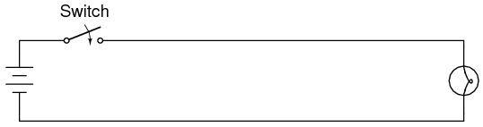
ILUSTRACIÓN
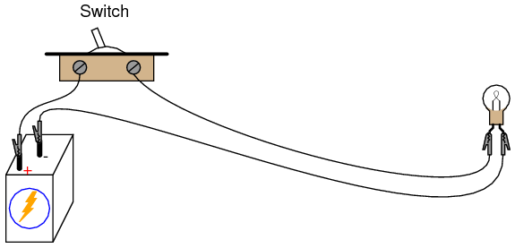
INSTRUCCIONES
Construya un circuito de una batería, un interruptor y una lámpara como se muestra en el diagrama esquemático y en la ilustración. Este circuito es más impresionante cuando los cables estánlargo, ya que muestra cómo el interruptor puede controlar la corriente del circuito sin importar cuán grande sea físicamente el circuito.
Mida el voltaje en la batería, en el interruptor (mida de un terminal de tornillo a otro con el voltímetro) y en la lámpara con el interruptor en ambas posiciones. Cuando el interruptor está apagado, se dice que estáabierto, y la lámpara se apagará igual que si se soltara un cable de un terminal. Como antes, cualquier interrupción en el circuitoen cualquier lugarhace que la lámpara se desenergice (se oscurezca) inmediatamente.
Electromagnetism
PIEZAS Y MATERIALES
- 6-volt battery
- brújula magnética
- Pequeño imán permanente
- Carrete de alambre magnético de calibre 28
- Perno grande, clavo o varilla de acero
- cinta electrica
Alambre magnéticoes un término para alambre de cobre de calibre fino con aislamiento de esmalte en lugar de aislamiento de caucho o plástico. Su pequeño tamaño y su aislamiento muy fino permiten enrollar muchas "vueltas" en una bobina compacta. Necesitará suficiente alambre magnético para enrollar cientos de vueltas alrededor del perno, clavo u otra forma de acero con forma de varilla.
Asegúrese de seleccionar un perno, clavo o varilla que seamagnético. ¡El acero inoxidable, por ejemplo, no es magnético y no sirve como bobina electromagnética! El material ideal para este experimento eshierro suave, pero cualquier acero comúnmente disponible será suficiente.
REFERENCIAS CRUZADAS
Lecciones en circuitos eléctricos, Volumen 1, capítulo 14: "Magnetismo y Electromagnetismo"
OBJETIVOS DE APRENDIZAJE
- Aplicación de la regla de la mano izquierda
- Construcción de electroimán
DIAGRAMA ESQUEMÁTICO
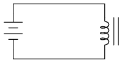
ILUSTRACIÓN
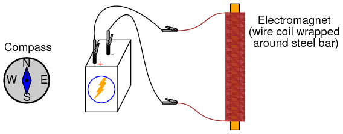
INSTRUCCIONES
Envuelva una sola capa de cinta aislante alrededor de la barra de acero (o perno o correo) para proteger el cable de la abrasión. Proceda a enrollar varios cientos de vueltas de alambre alrededor de la barra de acero, haciendo que la bobina sea lo más uniforme posible. Está bien superponer el alambre y está bien enrollarlo del mismo estilo que un carrete de pesca enrolla el hilo alrededor del carrete. La única regla que túdebeLo siguiente es que todas las vueltas deben realizarse alrededor de la barra en la misma dirección (¡sin invertir del sentido de las agujas del reloj al sentido contrario a las agujas del reloj!). Considero que un taladro de columna funciona como una excelente herramienta para enrollar bobinas: sujete la varilla en el portabrocas del taladro como si fuera una broca, luego encienda el motor del taladro a baja velocidad y deje que envuelva. Esto le permite alimentar alambre sobre la varilla de una manera muy constante y uniforme.
Después de haber enrollado varios cientos de vueltas de cable alrededor de la varilla, envuelva una o dos capas de cinta aislante sobre la bobina de alambre para asegurar el cable en su lugar. Raspe el aislamiento de esmalte de los extremos de los cables de la bobina para conectarlos a los cables de puente, luego conecte la bobina a una batería.
Cuando la corriente eléctrica pasa a través de la bobina, producirá un fuerte campo magnético: un "polo" en cada extremo de la varilla. Este fenómeno se conoce comoelectromagnetismo. La brújula magnética se utiliza para identificar los polos "Norte" y "Sur" del electroimán.
Con el electroimán energizado (conectado a la batería), coloque un imán permanente cerca de un polo y observe si existe una fuerza de atracción o repulsión. Invierta la orientación del imán permanente y observe la diferencia de fuerza.
El electromagnetismo tiene muchas aplicaciones, incluidos relés, motores eléctricos, solenoides, timbres, zumbadores, mecanismos de impresoras de computadoras y cabezales de "escritura" de medios magnéticos (grabadoras, unidades de disco).
Es posible que notes una chispa importante cada vez que se desconecta la batería de la bobina del electroimán: mucho mayor que la chispa producida si la batería simplemente se cortocircuita. Esta chispa es el resultado de una sobretensión de alto voltaje creada cada vez que la corriente se interrumpe repentinamente a través de la bobina. El efecto se conoce como"contragolpe" inductivo¡Y es capaz de aplicar una pequeña pero inofensiva descarga eléctrica! Para evitar recibir esta descarga, ¡no coloque su cuerpo sobre la interrupción del circuito cuando esté desenergizado! Utilice una mano a la vez cuando apague la bobina y estará perfectamente seguro. Este fenómeno se explorará con mayor detalle en el próximo capítulo (Circuitos CC).
Electromagnetic induction
PIEZAS Y MATERIALES
- Electroimán del experimento anterior.
- Imán permanente
Consulte el experimento anterior para obtener instrucciones sobre la construcción de electroimanes.
REFERENCIAS CRUZADAS
Lecciones en circuitos eléctricos, Volumen 1, capítulo 14: "Magnetismo y Electromagnetismo"
OBJETIVOS DE APRENDIZAJE
- Relación entre la intensidad del campo magnético y el voltaje inducido.
DIAGRAMA ESQUEMÁTICO
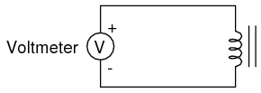
ILUSTRACIÓN
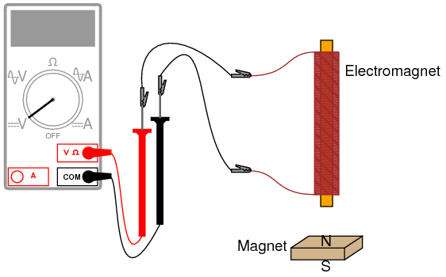
INSTRUCCIONES
La inducción electromagnética es el fenómeno complementario al electromagnetismo. En lugar de producir un campo magnético a partir de electricidad, producimos electricidad a partir de un campo magnético. Sin embargo, hay una diferencia importante: mientras que el electromagnetismo produce un campo magnético constante a partir de una corriente eléctrica constante, la inducción electromagnética requieremovimientoentre el imán y la bobina para producir un voltaje.
Conecte el multímetro a la bobina y configúrelo en el rango de voltaje de CC más sensible disponible. Mueve el imándespaciohacia y desde un extremo del electroimán, observando la polaridad y la magnitud del voltaje inducido. Experimente moviendo el imán y descubra usted mismo qué factor(es) determinan la cantidad de voltaje inducido. Pruebe el otro extremo de la bobina y compare los resultados. Pruebe con el otro extremo del imán permanente y compare.
Si usa un multímetro analógico, asegúrese de usar cables de puente largos y ubique el medidor lejos de la bobina, ya que el campo magnético del imán permanente puede afectar el funcionamiento del medidor y producir lecturas falsas. Los medidores digitales no se ven afectados por los campos magnéticos.
Lecciones en circuitos eléctricoscopyright (C) 2002-2023 Tony R. Kuphaldt, según los términos y condiciones delCC BY License.